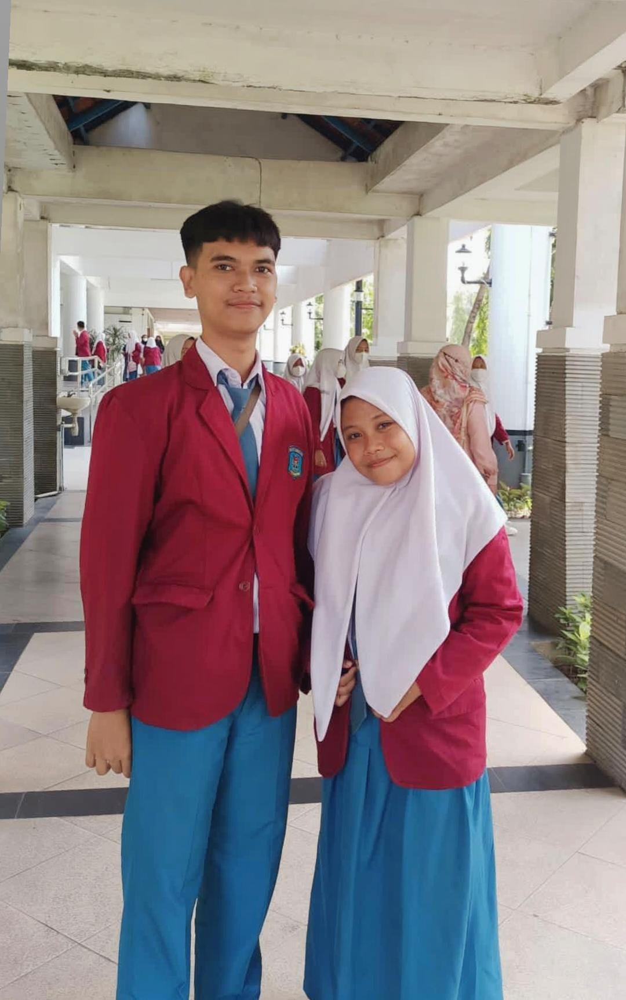
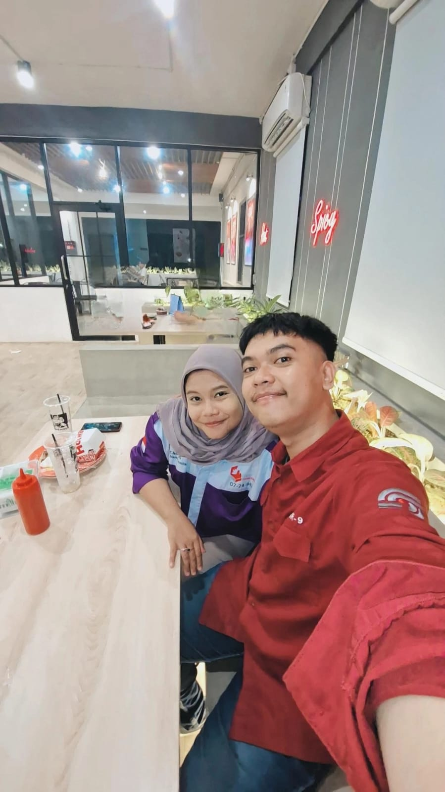
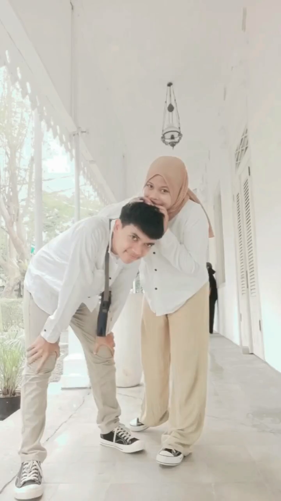
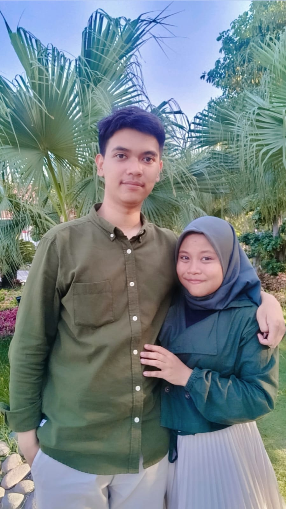
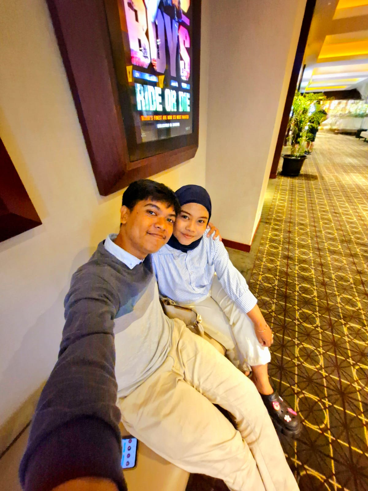
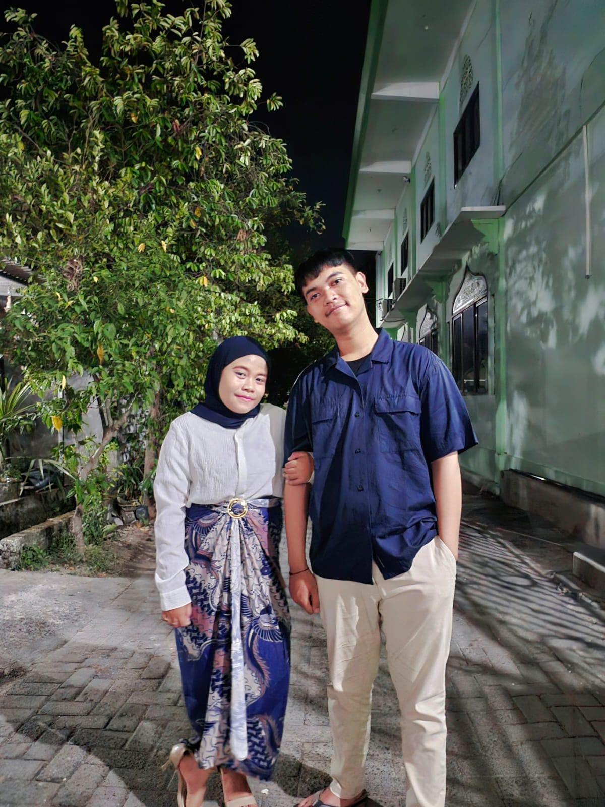
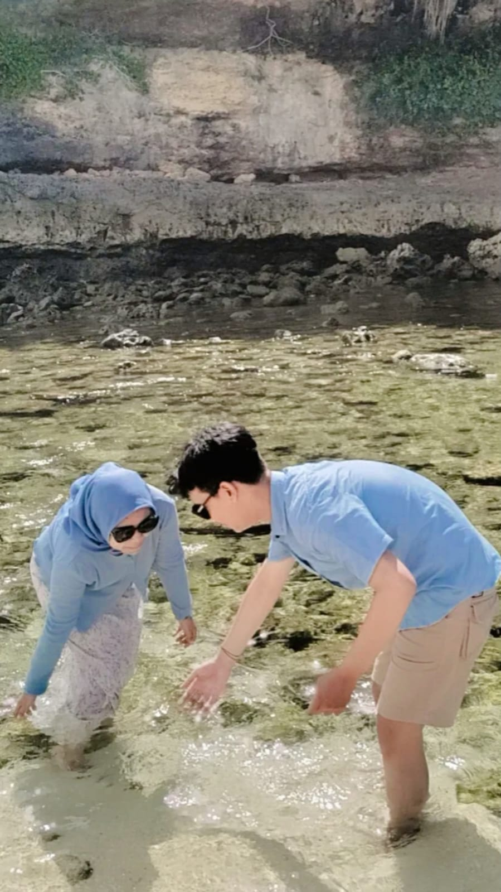
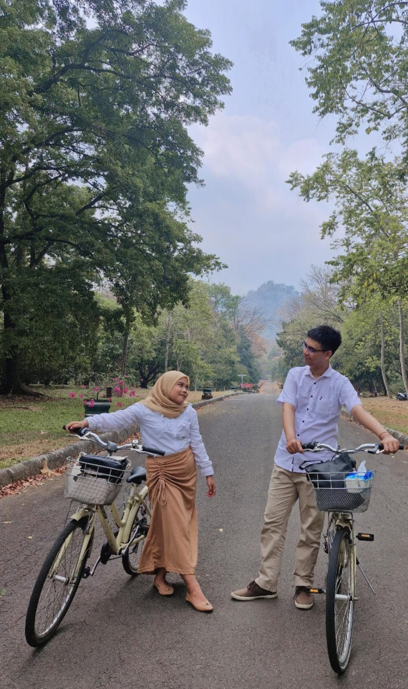
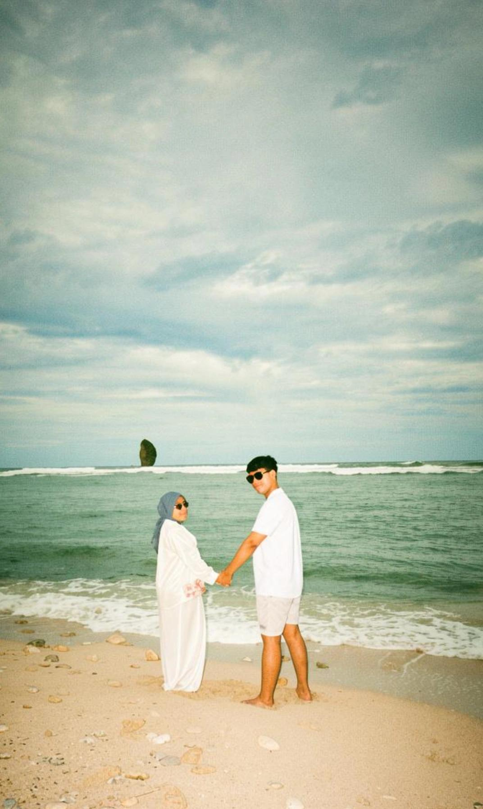

Our Love Story
2020 — 2026
Video pertama kita — momen yang selalu
akan kita ingat seumur hidup.
Beda program studi, beda fakultas —
tapi hati kita tetap satu arah.
sma.jpeg

kuliah.jpeg

Beda jalan, beda gedung, beda ilmu —
tapi pulangnya tetap ke kamu.
Setiap tahun, satu cerita baru
2020.jpeg

Di tengah dunia yang berhenti, kita justru menemukan satu sama lain. Momen ini menjadi awal dari perjalanan paling indah dalam hidup kita.
Kenangan pertama kitaDi tengah dunia yang berhenti, kita justru menemukan satu sama lain. Momen ini menjadi awal dari perjalanan paling indah dalam hidup kita.
Kenangan pertama kita2021.jpeg

Jarak dan waktu tidak pernah bisa memisahkan dua hati yang saling ingin. Kita belajar bahwa cinta sejati bertumbuh bahkan di hari-hari yang paling sulit.
Kita semakin kuatJarak dan waktu tidak pernah bisa memisahkan dua hati yang saling ingin. Kita belajar bahwa cinta sejati bertumbuh bahkan di hari-hari yang paling sulit.
Kita semakin kuat2022.jpeg

Akhirnya dunia kembali terbuka, dan kita pun menjelajahinya bersama. Tawa yang tak habis-habis, dan kenangan yang terukir di setiap tempat yang kita kunjungi.
Penuh tawa & petualanganAkhirnya dunia kembali terbuka, dan kita pun menjelajahinya bersama. Tawa yang tak habis-habis, dan kenangan yang terukir di setiap tempat yang kita kunjungi.
Penuh tawa & petualangan2023.jpeg

Tidak semua hari indah, tapi setiap hari bersamamu terasa bermakna. Kamu hadir bukan hanya di momen bahagia — kamu ada di saat aku paling membutuhkan seseorang.
Terima kasih sudah adaTidak semua hari indah, tapi setiap hari bersamamu terasa bermakna. Kamu hadir bukan hanya di momen bahagia — kamu ada di saat aku paling membutuhkan seseorang.
Terima kasih sudah ada2024.jpeg

Lima tahun adalah bukan waktu yang sebentar. Kita bukan lagi dua orang yang sama seperti dulu — kita telah bertumbuh, dan aku bersyukur tumbuh bersama kamu.
Lima tahun, satu hatiLima tahun adalah bukan waktu yang sebentar. Kita bukan lagi dua orang yang sama seperti dulu — kita telah bertumbuh, dan aku bersyukur tumbuh bersama kamu.
Lima tahun, satu hati2025.jpeg

Enam tahun. Ribuan hari. Begitu banyak momen kecil yang membangun sesuatu yang luar biasa besar — yaitu kita. Aku tidak bisa membayangkan perjalanan ini bersama siapa pun selain kamu.
Untuk selamanyaEnam tahun. Ribuan hari. Begitu banyak momen kecil yang membangun sesuatu yang luar biasa besar — yaitu kita. Aku tidak bisa membayangkan perjalanan ini bersama siapa pun selain kamu.
Untuk selamanya2026.jpeg

Enam tahun bukan perjalanan yang singkat. Tapi di setiap langkahnya, kamu selalu ada — dan itulah yang membuat semuanya terasa ringan. Terima kasih sudah tetap memilihku.
Enam tahun, satu hatiEnam tahun bukan perjalanan yang singkat. Tapi di setiap langkahnya, kamu selalu ada — dan itulah yang membuat semuanya terasa ringan. Terima kasih sudah tetap memilihku.
Enam tahun, satu hatiBukan karena kita sempurna —
tapi karena kita selalu memilih
untuk tetap bersama.